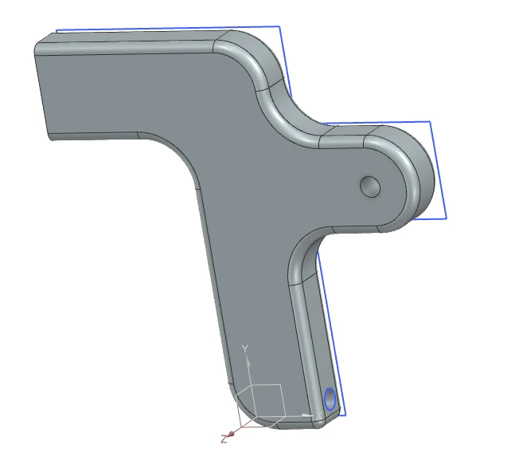
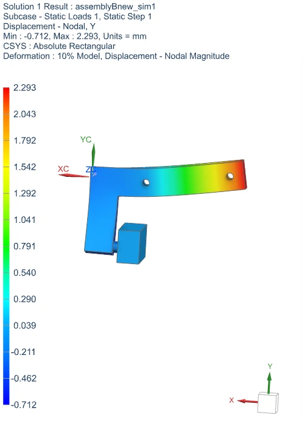
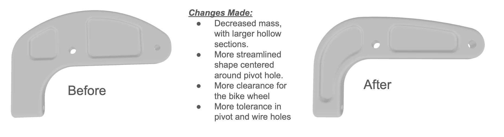
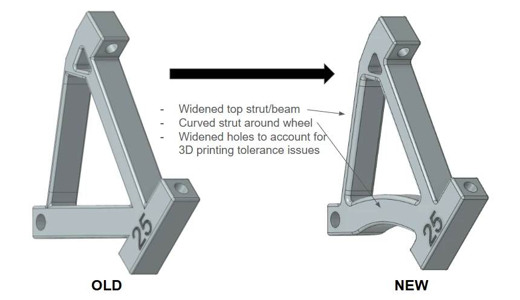

01The project
Our team of five had one quarter to design, print and test a pair of single-pivot rim brake calipers for a real bicycle. They had to be made from Nylon-12, which is far less stiff than the aluminum normally used, so the shape had to do the work the material couldn't.
I was the team's scheduling lead and supported CAD and manufacturing. Our main targets were a stopping distance under 15 m, at least 200 N of braking force at the pad, and a weight under 150 g.

02How it works
Each caliper started in Siemens NX as a solid block: the largest shape that fit around the pivot, the brake pad and the wheel. Topology optimization then removed the material that wasn't carrying load, and we modeled Design 1 from that result.


FEA showed the top arm of the right caliper was undersized, so we thickened the sections carrying the most shear and ran it again.
03Problems
Design 1 was very light at 86.5 g, but it didn't brake well. The bike took 15.8 m to stop, the braking force was about 184 N, and riders rated it 2 out of 5. All three missed our minimums.
- Twisting we hadn't modeled. The calipers twisted under load, so part of the cable force went into twisting the part and less reached the brake pad.
- Tight mounting holes. Print tolerances left two holes undersized, and we had to drill them out.
- Pad clearance. The left caliper barely had room to fit the brake pad, which bent the part before it was even used.
04Fixes
For Design 2 we moved material instead of adding it. On the right caliper, mass went closer to the axis of twist to resist torsion. On the left, we curved the strut around the wheel for pad clearance and widened the top beam. Both got larger holes to allow for print tolerance.


05Conclusion
Design 2 passed every target we could test, mounted without modification, and was lighter than Design 1.
Braking force is calculated from the hand force at the lever (100 N for Design 1, 150 N for Design 2), the lever ratios and a pad friction of 0.7.
The main lesson was that simulation doesn't replace testing. Our FEA said Design 1 was strong enough, and it was, but it still braked poorly because of twisting we hadn't simulated. With more time, I'd add a deeper I-beam section to resist bending and get closer to the 2 m ideal stopping distance.